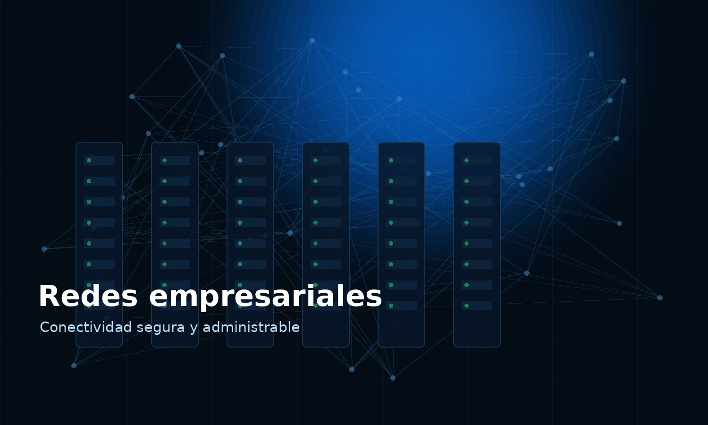
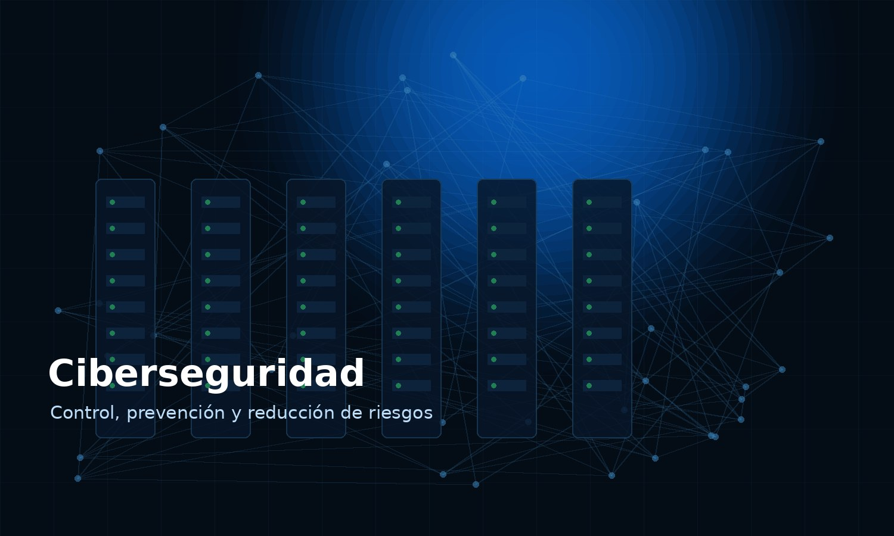
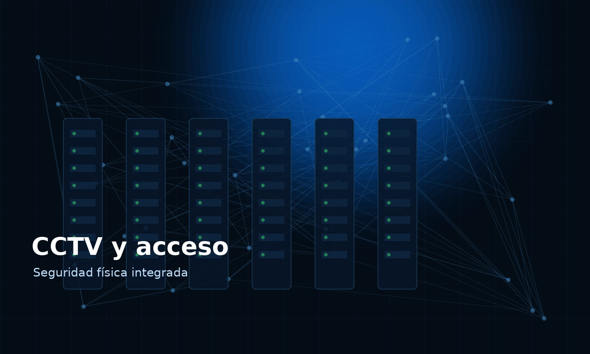
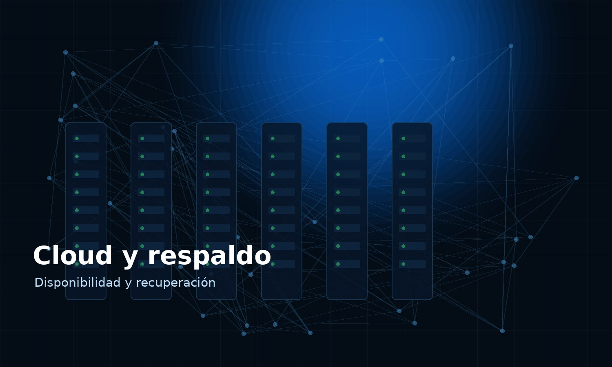

Un aliado tecnológico enfocado en estabilidad, seguridad y mejora continua.
Avanta Systems apoya a organizaciones que necesitan tecnología bien administrada, segura y alineada al negocio.
Trabajamos con empresas, comercios, oficinas, instituciones y operaciones que dependen de redes, servidores, seguridad física y controles digitales.
Impulsar el avance tecnológico mediante soluciones integrales, seguras y administrables.
Entregar propuestas claras, implementaciones documentadas y soporte con enfoque de servicio.
Soluciones tecnológicas integradas para tu operación.
Servicios modulares para iniciar con una necesidad puntual y crecer hacia una operación más segura y administrada.

Redes e infraestructura
LAN/WiFi, switches, firewalls, VPN, segmentación y conectividad empresarial.

Ciberseguridad
Hardening, protección perimetral, controles de acceso, monitoreo y reducción de riesgos.
Servidores y virtualización
Servidores físicos y virtuales, backups, disponibilidad y soporte de plataformas críticas.

CCTV y control de acceso
Cámaras IP, NVR, control de acceso, biométricos y sistemas de seguridad física.

Cloud y continuidad
Cloud, respaldo, recuperación ante desastres y mejora de disponibilidad.
Soporte empresarial
Atención técnica, mantenimiento preventivo, soporte remoto/presencial y gestión de activos.
Integramos plataformas líderes del mercado.
Redes, seguridad, virtualización, respaldo, servidores, telefonía, CCTV y operación de aplicaciones.
Las marcas mencionadas pertenecen a sus respectivos propietarios. Avanta Systems implementa, integra y administra soluciones basadas en estas tecnologías según la necesidad del cliente.
Preparados para apoyar operaciones exigentes.
Ideal para organizaciones que requieren disponibilidad, trazabilidad, seguridad y soporte técnico constante.
No vendemos solo instalación: entregamos control, documentación y continuidad.
El valor está en entender el entorno, documentar lo implementado y dejar recomendaciones claras.
Diagnóstico técnico con lenguaje claro para gerencia.
Soluciones ajustadas al presupuesto, riesgo y necesidad real.
Implementación ordenada con evidencia y entrega formal.
Enfoque preventivo para reducir incidentes.
De la necesidad a la solución implementada.
Evaluación
Levantamos información técnica y entendemos el impacto operativo.
Propuesta
Presentamos alcance, costos, tiempos y recomendaciones.
Implementación
Ejecutamos con orden y comunicación constante.
Entrega y soporte
Documentamos lo realizado y damos seguimiento.
Conversemos sobre tu necesidad tecnológica.
Podemos ayudarte a evaluar, cotizar e implementar una solución clara y profesional.